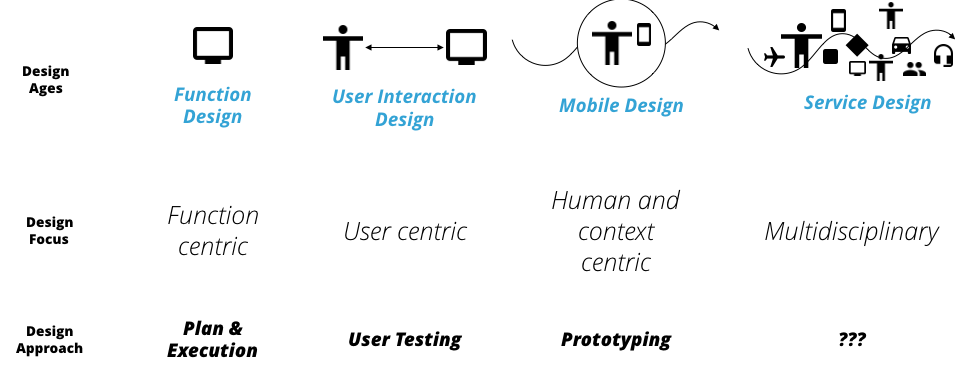
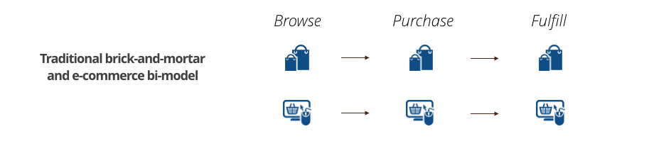
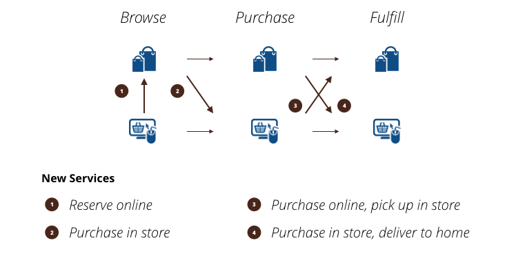

在之前的博客中《服务设计的难点》我们讨论了服务设计的逻辑。两年过去了，服务设计在不瘟不火中成为一个行业的热点，两年前我说我们没有必要大张旗鼓地进入这个领域，自然有人帮助我们酝酿这个概念，事实上确实如此，在最近的几次设计咨询中，我被邀请讲解服务设计的体系和对其的看法，服务设计在两年以后，值得我们重新思考。
设计服务市场的趋势
谈论设计概念和实践的流行，背后是设计服务市场的推动，这里包含对设计服务的需求和供给。
从市场需求的角度，移动设计的出现已经经历若干年的时间，若干年里，中国出现了「互联网+」的概念，其本质是互联网经济明白，真正的客户体验在「最后一公里」，互联网服务需要向实体服务下沉，才能避免线上纯粹的流量竞争，于是对互联网服务线下化的需求增加。
另一方面，传统公司随着近十年的数字化投资，已经积攒了一定的数字化能力，他们突然发现其线下丰富的服务体验反而是对抗互联网新贵的优势，这时候，他们也需要整合线下服务到线上体验的解决方案。
从供给的角度，移动设计体验正在朝标准化发展，基础线上「元体验」（特指移动互联网最基础的交互形式）趋于完善，如浏览、搜索、导航、支付等，单纯移动体验提升的空间已经不足，这使得传统设计服务公司的竞争空间已经越来越小，它们需要新的服务从竞争中脱颖而出。
近几年设计服务公司的主要业务创新包括：
- 以设计投资（Design Venture）的方式新兴互联网企业的服务孵化；
- 对接传统公司推出数字与线下服务整合的服务创新。
前者正好对应互联网市场的第一个需求、后者则对应其二。因此服务设计的流行，是符合设计服务需求市场趋势的。
设计实践的趋势
理解一个设计概念，应该从历史的角度看待其客观规律，我们所处的设计行业依然是IT行业的分支，在服务设计之前，有如下几个发展阶段：
- 功能设计阶段；
- 用户交互设计阶段；
- 移动设计阶段。
从功能设计到移动设计的演进，就是上下文逐渐占据设计之核心的过程——设计的中心从功能到用户再到上下文的转变。这个转变随之带来的，是设计方法的演进，从最开始的调研、文档、执行，到移动时代的快速原型、设计研究，这个趋势不可逆转，正因为这样的趋势，我们才强调许多传统设计方法在新时代中的比重变得越来越小，例如冗长的调研过程、繁复的用户建模等。
而设计服务所做，是在多元变化的上下文中，连接多种设备、多个故事、多种体验、多个利益方、建立一个价值系统，这个系统早已超越用户、设备、和上下文，在这个背景下，设计实践难以拥有一个专注点（Multidisciplinary）：

设计的专注点（Design Focus）决定了设计实践的核心，每个时代都有经典的设计实践支撑其专注点，例如功能时代的设计文档、交互设计时代的用户测试、移动设计时代的原型。在服务设计的背景下，我不认为我们足够有信心对服务设计实践有成熟的归纳。
我们所看到的，依然是以过去思维方式进行进行服务设计，例如大规模的市场研究、以客户为中心的思维等等，这些都不应该成为服务设计实践的核心，正是因为如此，我不认为市场上有任何一个「被设计的」服务设计案例，包括我们自己，都不可谓之成功。
简单的例子，多触点背景下，单一客户体验地图（Customer Journey Map）所设计的早已不再是客户体验服务的唯一路径，那么我们是不是要重新思考此设计实践的作用？
对于一个兴起的设计概念，背后有火热的市场需求，作为行业中的设计实践者，应该从设计的核心逻辑中、从设计演进的角度，重新思考设计实践如何适应新的设计关注点——没有单一的关注点。
业务局限性
服务设计兴起的同时，企业线上下业务开始出现从未有的撞击，传统市场、渠道、销售、售后的体系也开始接受新服务的挑战。拿简单的电商线下化来说，传统数字渠道与线下服务分离的形式中，客户选择的服务非常单一：

线上下的整合服务，出现了大量全新的服务形式，如下图显示的那样，例如线上预定店内购买、店内同过线上购买、店内购买线上配送、线上购买店内提货等。

真实场景中，这只是冰山一角，如果我们将配送中心、不同地点的店面、其他数字渠道（如微信）、售后服务加入进来，服务将更加复杂和灵活。 因此，服务设计核心在于「适应性（Adaptativity）」而不只在流程简化、或单点体验升级。
适应性的服务设计遇到了最大挑战——企业内哪个组织负责服务的整体改造？线上部门、线下部门、市场部门、还是客户服务部门？在传统业务构架下，企业难以找到一个合理的「牵头者」带领服务体验的整体改造。
因此之前所说「市场上有任何一个被设计的服务设计案例」的另一部分原因来自需求市场的不成熟——不解决企业的业务结构问题、责权分配，无法完成真正的服务设计。
这也给传统设计服务市场提供商制造了巨大的挑战：缺少组织级战略的影响力。真实发生的实例是，设计服务公司所规划的设计方案，在业务上难以落地，这几乎发生在每一间设计服务公司里，一方面传统设计业务竞争太过于激烈、二方面新兴业务缺少真正具有商业影响力的成功案例。
写在最后
本篇的目的是从行业的角度来思考服务设计在中国的发展趋势，总体来说，有大量存在的需求，无论来自新兴互联网模式还是传统企业；但绝大部分的需求还不成熟，现有业务模式是服务设计创新的最大桎梏。
从供给的角度，设计实践还未曾成熟、设计师能力良莠不齐、设计服务一哄而上，缺少从商业和市场角度看服务的组织影响力。
服务设计的兴起有其必然性，它是设计服务市场供需双方共同作用的结果，诸君应冷静和理性的对待。